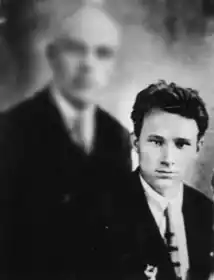
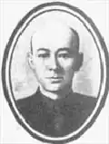

Андрійчук Кесар Омелянович народився 22 березня 1907р. в с.Латанці Брацлавського повіту Кам'янець-Подільської губернії (нині Вінницької області) в багатодітній бідняцькій сім'ї. В 1923р. після закінчення єдиної трудової школи в рідному селі вступив до Вороновицького технічного училища, де за рік опанував ремесло столяра. Саме тут він спізнав смак громадської роботи; був секретарем комнезаму, завідувачем хати-читальні, сількором вінницької окружної газети "Червоний край". У 1924р. з путівкою комнезаму вирушив до Вінниці, де став слухачем трирічних педагогічних курсів ім. Івана Франка. В 1927р. поступив на літературний факультет Одеського ІНО, навчаючись в якому, відвідував загальноміське літературне об'єднання, де починали свій творчий шлях Степан Олійник, Сава Голованівський, Степан Крижанівський, Олег Килимник, Володимир Іванович та ін.
Початок свого літературного шляху Андрійчук відносив на січень 1927р., коли в одеському "Червоному степу" вперше був надрукований його вірш "21-ше січня", присвячений пам'яті Леніна. Потім вірші, новели, рецензії регулярно з'являлися на сторінках одеських видань "Чорноморська комуна", "Молода гвардія", "Блиски" і "Металеві дні", а також "Зорі" (Дніпропетровськ), "Літературного додатку" (Житомир) та ін. Того ж року він був прийнятий до ВУСППу.
У 1931р. в харківському видавництві "ЛІМ" видрукувана перша збірка поезій К.Андрійчука "На зламі", яка виявилася й останньою. Поет підготував до друку другу книжку, але побачити її на полицях книгарень не зміг. Бо у вересні 1937р. був заарештований органами НКВС Вінницької області і через три місяці без слідства, без виклику в суд, без застосування будь-якої статті Карного кодексу УРСР засуджений на 10 років позбавлення волі у виправно-трудових таборах. Усі його скарги, протести, клопотання залишалися поза увагою правових органів. Лише 8 березня 1947р., по відбутті строку покарання, його звільнили з-під варти без будь-яких пояснень і вибачень. Але з приписом: оселитися в с.Малопіщанка Маріїнського району Кемеровської області. З грудня 1947р. по квітень 1961р. Андрійчук викладав у тамтешній школі російську мову й літературу. Продовжувати творчу роботу виявилося справою безперспективною, оскільки про друкування його віршів не могло бути й мови. Лише в 1956р., після численних скарг, органами прокуратури було призначено нове розслідування справи Андрійчука, в процесі якого встановлено, що всі без винятку звинувачення в 1937р. були вигадані й нічим не підтверджені. За протестом прокурора Вінницький обласний суд 15 березня 1956р. постанову особливої наради при НКВС від 26 листопада 1937р. скасував і справу провадженням припинив. Після громадянської реабілітації Андрійчук був поновлений у рядах членів Спілки письменників, до якої був прийнятий кандидатом ще в 1934р. Лишок свого життя він провів на батьківщині, де працював педагогом Тиврівської середньої школи, зрідка друкуючись у періодиці. Помер 7 серпня 1958 року. ЛУ 19(4428) 9.05.1991